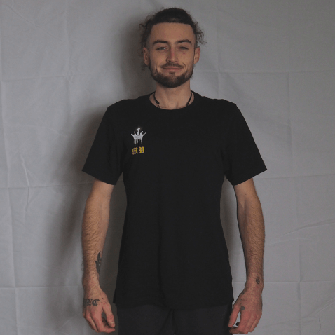

Offline Website Maker
C’est un royaume de l’image où chaque détail compte, et où je suis à la fois le roi de la photo, le ministre du graphisme et le jardinier de la créativité.
Photographe passionné (et perfectionniste assumé), je capture le monde avec précision, patience…
et parfois en rampant dans l’herbe pour choper le bon angle sur une abeille. Mon appareil ne connaît pas de frontières : je shoote aussi bien le ciel que les plantes, les insectes que les portraits humains, les animaux, les chantiers, les décors urbains ou encore les ambiances de nature morte.
En clair, si ça existe, je peux le photographier
Chaque photo est le fruit d’un œil aiguisé et d’une exigence constante.
Je nourris également une banque d’images personnelle, remplie de clichés uniques que j’alimente quotidiennement.
Une mine d’or visuelle, 100 % originale, prête à répondre à tous les besoins créatifs.
À côté de mon trône de photographe, je tiens un petit atelier graphique.
Le graphisme n’est pas mon activité principale, mais il vient sublimer mes images.
Je crée des flyers, identités visuelles et supports pro, toujours enrichis de mes propres photos.
Résultat : des projets sur mesure, avec une vraie personnalité. Pas de banque d’images fades ou de designs sans âme ici — tout est fait maison, avec passion (et un peu de café).
Monarchie Visuals, c’est l’alliance entre rigueur, créativité, sens artistique et une bonne dose de caractère. Chaque projet est traité avec soin, authenticité et ce petit grain de folie qui fait toute la différence.
Alors, prêt à donner à vos visuels un style royalement unique ?
Monarchie Visuals est née officiellement le 25 février 2025, mais son histoire commence bien avant !
Elle est le fruit d’une rupture totale et d'une volonté farouche de me réapproprier ma propre identité.
Créer ce 'Royaume', c’était décider de devenir moi-même. Aujourd'hui, cette quête personnelle se reflète dans mon travail : je ne crée pas seulement des images, je bâtis des identités visuelles et artistiques solides pour ceux qui, comme moi, veulent marquer leur territoire et affirmer qui ils sont !
Mon plus grand atout est mon autonomie totale.
En un an, j'ai transformé mon envie d'apprendre en une expertise multi-facettes : gestion d'entreprise, réseaux sociaux et maîtrise technique. Je ne suis pas un exécutant, je suis un créateur qui apprend chaque jour pour combler le manque par l'excellence.
Ma fierté est là : prouver que la volonté surpasse les diplômes. Avec mon équipement Olympus, Fujifilm et Lumix, je dompte la lumière pour offrir des résultats qui dénotent par leur force et leur authenticité.
Basé à Vereux, mon empire s'étend sur toute la Franche-Comté.
Mon emploi du temps est millimétré pour assumer chaque obligation avec une rigueur absolue.
Que ce soit pour un reportage terrain ou une création graphique complexe, j'interviens là où l'image a besoin de caractère.
Ma spécialité est la polyvalence : je maîtrise l'ensemble de la chaîne créative pour assurer une cohérence visuelle parfaite, du premier clic à la livraison finale.
Je m'engage sur la réactivité sans sacrifier la noblesse du résultat.
Vos projets sont livrés en 24h à une semaine selon leur ampleur : car la qualité exige du temps, mais votre ambition n'attend pas.
Votre projet n'est pas qu'une facture, c'est une pièce de ma collection !
Offline Website Maker